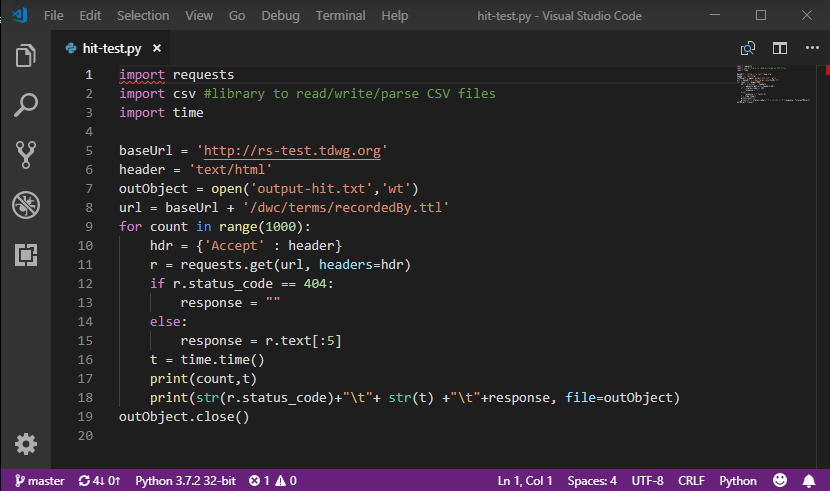
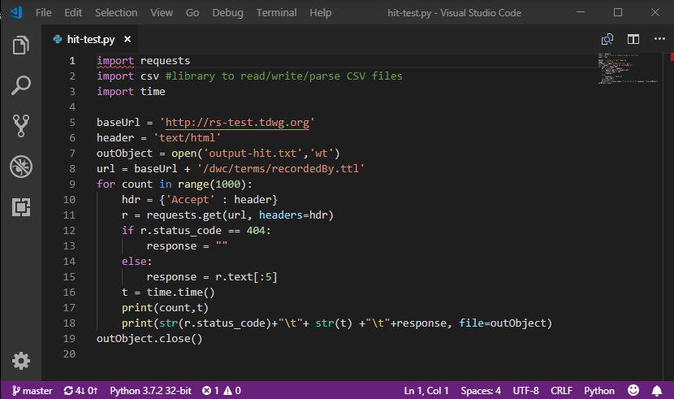

Overview: Python is a high-level, interpreted language known for its simplicity and readability.
It supports multiple programming paradigms, including procedural, object-oriented, and functional programming.
Usage: Widely used in web development, data science, artificial intelligence, scientific computing, and automation.
Key Features: Extensive standard library, dynamic typing, and strong community support.
these two pictures are the logo of python and script example
 

Overview: JavaScript is a high-level, interpreted language primarily used for web development to create interactive effects within web browsers.
Usage: Essential for front-end development (alongside HTML and CSS) and increasingly used in back-end development with frameworks like Node.js.
Key Features: Event-driven, prototype-based, and supports functional programming.


Overview: C++ is an extension of the C programming language that includes object-oriented features.
It's a compiled language known for its performance and low-level memory manipulation capabilities.
Usage: Widely used in system/software development, game development, and applications requiring high performance.
Key Features: Rich set of features including OOP, templates, and standard template library (STL).


Overview: Ruby is a high-level, interpreted language known for its simplicity and productivity.
It follows the principle of least astonishment (POLS), making it intuitive to read and write.
Usage: Primarily used in web development, particularly with the Ruby on Rails framework.
Key Features: Dynamic typing, garbage collection, and a strong focus on simplicity and productivity.


Overview: Go is a statically typed, compiled language created at Google, known for its simplicity and efficiency.
Usage: Used for system and network programming, web development, cloud services, and distributed systems.
Key Features:
Concurrency: Built-in support with goroutines and channels.
Fast Compilation: Quick compile times for improved development workflow.
Rich Standard Library: Simplifies common programming tasks.
Garbage Collection: Automatic memory management.
Static Typing: Catches errors at compile time.
.png)
 script.png)